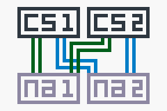

So this week I revived an old netapp FAS2040 system. It was a big mess.
This was the architecture I was working with

The two core switches are cisco devices and na1 & na2 are two FAS2040s.
Getting the licenses
Since the FAS2040 is now officially EOL, we must resort to less “official” ways
to get ourselves the cf license. This license is needed in order to enable
takeover.
Disclaimer: Always check with your netapp affiliate for all your license/rip-off needs
Luckily the licenses on these old devices only consist of 7 letters, case
insensitive. This gives us 26^7 = 8031810176 possibilities. At first this may
sound like a lot but we only need to find one valid cf license.
Using the crunch tool and some shell magic, I was able to find a 428 node license in under five minutes.
./crunch 7 7 \
| awk '{print "license add " $0}' \
| ssh root@na \
| grep -vi "invalid license code" \
| tee out.txt
This command leaves us with a text file called out.txt containing every tried
license code and its result, if it wasn’t invalid.
Let’s see what we’ve got:
grep -i "a .* node license" licenses.txt
A snapmanagerexchange 293 node license has been installed.
A syncmirror_local 293 node license has been installed.
A cf 124 node license has been installed.
A snapvalidator 423 node license has been installed.
A snaplock 103 node license has been installed.
A cf 6 node license has been installed.
A snaplock_enterprise 480 node license has been installed.
A snapmanagerexchange 208 node license has been installed.
A snaplock_enterprise 53 node license has been installed.
A env_exception 136 node license has been installed.
A flex_clone 98 node license has been installed.
A snapmanager_vi 163 node license has been installed.
A sv_application_pri 435 node license has been installed.
...
Setting up HA
To start using the cf features, you need to reboot the two filers.
Be careful! Check your /etc/rc file first or you may loose your network configuration
With that out of the way, takeover now simply works ™
Understanding the NA takeover model
NA takeover does not behave like failover on the ASA or any other system I know of. The two filers communicate over the enclosure backplane and operate independently of one another. In the case of failure, the second controller takes over the functionality of the failing one. This means you don’t have a floating IP between these two devices. Instead, the partner attaches the IP Address of the failed node to its own interfaces.
For a concrete example, this is the /etc/rc file of our first (primary)
controller:
hostname NA1
ifgrp create lacp ifgrp_ab -b rr e0a e0b
ifgrp create lacp ifgrp_cd -b rr e0c e0d
ifgrp create single ifgrp_200_ha ifgrp_ab ifgrp_cd
ifgrp favor ifgrp_ab
ifconfig ifgrp_200_ha 192.168.1.200 netmask 255.255.255.0 partner ifgrp_200_ha
route add default 192.168.1.200 1
routed on
options dns.enable off
options nis.enable off
savecore
and the second
hostname NA1
ifgrp create lacp ifgrp_ab -b rr e0a e0b
ifgrp create lacp ifgrp_cd -b rr e0c e0d
ifgrp create single ifgrp_200_ha ifgrp_ab ifgrp_cd
ifgrp favor ifgrp_ab
ifconfig ifgrp_200_ha partner ifgrp_200_ha
route add default 192.168.1.200 1
routed on
options dns.enable off
options nis.enable off
savecore
As in our case, the second controller is used for takeover only, it does not even need an ip on its own.
Using cf takeover and cf giveback you can now swap between the two filers!
Switch configuration
Here’s the switch config we use:
interface GigabitEthernet5/25
description NA1-e0a
switchport access vlan 99
switchport mode access
storm-control broadcast level 25.00 20.00
channel-protocol lacp
channel-group 20 mode active
!
interface GigabitEthernet5/26
description NA1-e0b
switchport access vlan 99
switchport mode access
storm-control broadcast level 25.00 20.00
channel-protocol lacp
channel-group 20 mode active
!
interface GigabitEthernet5/27
description NA2-e0a
switchport access vlan 99
switchport mode access
storm-control broadcast level 25.00 20.00
channel-protocol lacp
channel-group 21 mode active
!
interface GigabitEthernet5/28
description NA2-e0b
switchport access vlan 99
switchport mode access
storm-control broadcast level 25.00 20.00
channel-protocol lacp
channel-group 21 mode active
interface Port-channel20
description NA1-e0a-e0b
switchport
switchport access vlan 99
switchport mode access
!
interface Port-channel21
description NA2-e0a-e0b
switchport
switchport access vlan 99
switchport mode access